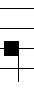
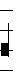

Einzelnoten
Einzelnoten kann man über den Befehl pun einfügen.
Syntax:
pun h t
- h ist die Tonhöhe
- t ist der Notentyp
Die verschiedenen Notentypen:
- pun G 0

- pun G 1
- pun G 2 
- pun G 3 
Das schreiben von Chorälen mithilfe des Programmes erfordert verschiedene Befehle. Jeder dieser wird in eine eigene Zeile geschrieben. Insgesammt gibt es 14 verschiedene Befehle jedoch kann man mithilfe verschiedener Abkürzungen mit nur 8 davon auskommen, davon sind zwei nicht direkt am Notenbild beteiligt.
Zusätzlich gibt es Kurzformen, mit denen man Eingaben selbst ohne Befehle tätigen kann.
Einzelnoten kann man über den Befehl pun einfügen.
Syntax:
pun h t
Die verschiedenen Notentypen:
Zweiergruppen kann man über den Befehl pes einfügen.
Syntax:
pes h1 h2 t
Mit t=0 wird das Programm die Gruppe als ein Pes dargestellt. Ist dies jedoch nicht erlaubt, da der 1. Ton über dem 2. Ton liegt, wird es stattdessen als Clivis dargestellt.
Die verschiedenen Notentypen:
Eine Dreiergruppe kann man über den Befehl tor einfügen.
Syntax:
tor h1 h2 h3 t
Die verschiedenen Notentypen:
Schlüssel kann man über den Befehl sc einfügen.
Syntax:
sc l t
Die verschiedenen Schlüsseltypen:
Schlüssel werden automatisch bei allen weiteren Zeilen übernommen. Eine Änderung ist auch möglich und demnach werden die Schlüssel aktualisiert.
Pausen kann man über den Befehl pa einfügen.
Syntax:
pa t
Die verschiedenen Pausentypen:
Ein b kann man über den Befehl b einfügen.
Syntax:
b h
Anstelle dieses Befehles kann man auch bei jeder anderen Tonhöhe ein b anhängen und es entsteht ein b an der zugehörigen Stelle.
Beispiel:
Das Einfügen eines Liedtextes braucht keinen Befehl, man kann ihn in eine Zeile schreiben und er wird eingefügt.
Es gibt aber auch die Möglichkeit den Text erst nach einer gewissen Anzahl von Noten einfügen zu lassen. Dazu wird vor Beginn der nächsten Grupp +n+ eingegeben, wobei n die Zahl der zu überspringenden Noten ist.
So würde
Silbe 1+5+Silbe
Die 2. Silbe erst nach 5 Noten eingefügen.
Ein Quilisma kann man über den Befehl q einfügen.
Syntax:
q t n
Der Befehl bezieht sich immer auf die vorherige Zeile im Code.
Ein Quillisma in diesem Programm sieht folgendermaßen aus:

Lücken kann man über den Befehl gap einfügen.
Neue Zeilen kann man über den Befehl newline einfügen.
Man kann die Noten vergrößern oder verkleinern mithilfe des Befehls scal.
Dieser Befehl muss in der ersten Zeile des Codes stehen
Syntax:
scal g
Es ist empfohlen für g mindestens 0.67 zu verwenden.
Eine Überschrift kann mit dem Befehl text eingefügt werden.
Dieser Befehl muss, wenn er verwendet wird,in der zweiten Zeile des Codes stehen
Syntax:
text o s
Die Bündigkeiten
Ein Beispiel wäre
text 1 Das ist die Überschrift
Wenn man nicht mehr weiß, wo man sich im Code befindet, kann man den Befehl M einfügen und die nächste Note wird Rot markiert.
Wenn der Notentyp 0 ist kann man ihn weglassen
Bsp:
pun G 0 = pun G
Man kann die Befehle pun,pes und tor auch durch < ersetzen. Jedoch erlaubt diese Formulierung nicht den Notentyp abzukürzen.
Es ist auch eine Eingabe ohne Code möglich. Wenn man das Ausgabefenster anklickt, kann man die folgenden Kurzformen verwenden:
| 1.Eingabe | 2.Eingabe | 3.Eingabe | Effekt |
|---|---|---|---|
| Tonhöhen Bsp:A+Gb | Zahl | Es wird eine Notengruppe generiert, mit der Zahl als Notentyp | |
| Leerzeichen | Es entsteht eine Lücke | ||
| Enter | Es entsteht eine neue Zeile | ||
| q | Tonhöhe | Zahl | Es entsteht ein Quillisma, auf der Tonhöhe mit der Zahl als Nummer der Note in der letzten Gruppe |
| q | Tonhöhe | Enter | Es entsteht ein Quillisma, auf der Tonhöhe |
| # | Text | Enter | Es wird ein Liedtext eingefügt |
| Backspace | Die aktuelle Eingabe wird gelöscht. Wenn nichts eingegeben wurde wird der letzte Befehl gelöscht. | ||
| p | Zahl | Es wird eine Pause erstellt die Zahl wird der Pausentyp |